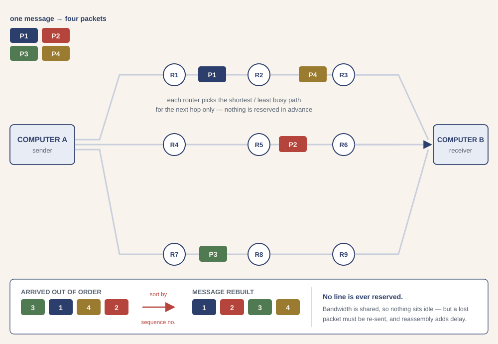
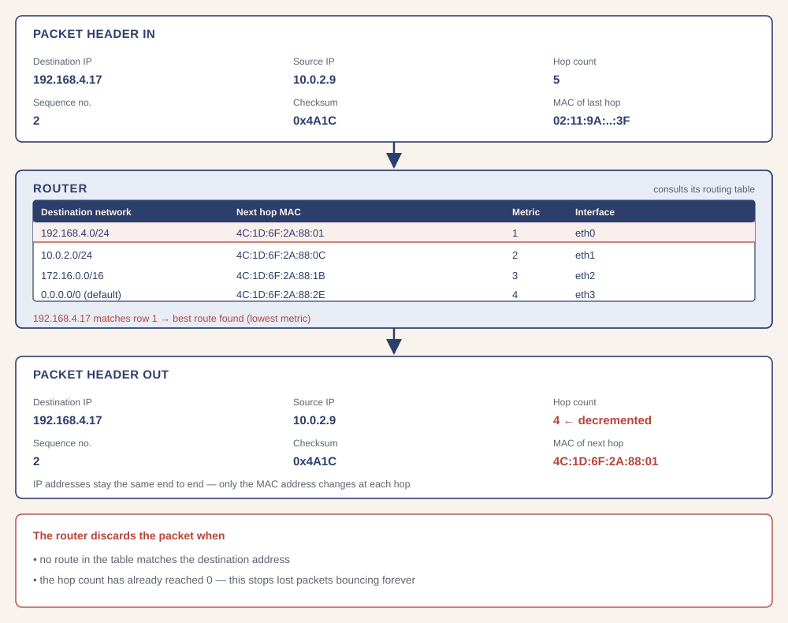
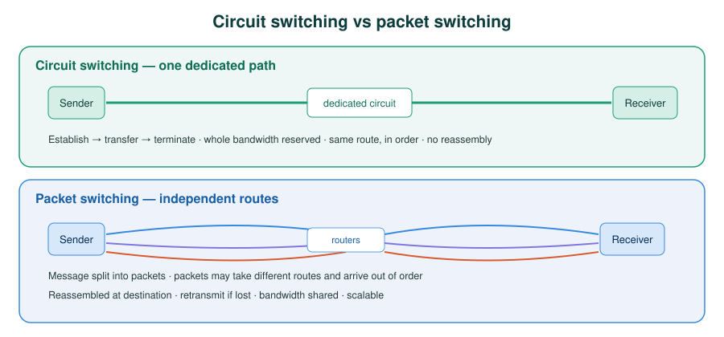

Circuit switching
What is circuit switching?
- Circuit switching sets up a dedicated channel (circuit) between sender and receiver that lasts for the whole connection — the line is effectively tied up until the call ends
- This is how a traditional telephone call works
- Every message follows the same single route, in the order it was sent, as a continuous stream
- Transmission is usually bidirectional
- There are three stages in every circuit-switched connection:
- Establish the circuit between sender and receiver
- Transfer the data (analogue or digital, usually bi-directional)
- Terminate the connection when the transfer is complete (the circuit is closed / released at the end)
Advantages
- The circuit is dedicated to that single transmission only
- The whole bandwidth is available to the user, giving a steady / fixed / high data transfer rate
- Data transfer rate is constant and predictable, because the whole bandwidth of the circuit is reserved for the connection
- Data (frames) arrive in the same order they were sent — no need to reassemble and no time lost reordering
- Data cannot get lost — all of it follows one route in sequence
- No waiting time at switches and no intermediate delays once the circuit is established
- Simple method of data transfer
- Suitable for long, continuous transmission
- Works better than packet switching for real-time applications (voice, video, video streaming)
Disadvantages
- Not flexible — empty frames may still be sent, and only a single dedicated line is used
- Nobody else can use the circuit, even when it is idle — the circuit is always there whether or not it is being used
- Bandwidth cannot be shared, so system resources are underutilised / inefficient and bandwidth may be wasted
- High / whole bandwidth is required, and establishing a dedicated path for each connection can have cost implications
- If there is a failure on the dedicated line there is no alternative route — the call is dropped and must be re-established
- The time needed to establish the link can be long, before any data moves
- Reduced security — all data travels along a single path, so it can be intercepted
- Scalability is difficult — more users require more physical paths
Where it is used
- Public telephone networks (PSTN)
- Private telephone networks
- Private data networks
- Any situation where a dedicated path must be sustained throughout the call, where the whole bandwidth is required, or where real-time communication is needed (standard voice communications, video streaming)
Definition, benefits, drawbacks and appropriate use ★
State, with a reason, where it would be appropriate to use circuit switching.
(a) [2]
Give two benefits and two drawbacks of circuit switching.
(b) Benefit 1 … Benefit 2 … Drawback 1 … Drawback 2 … [4]
Answer
Q5(a)
- Circuit switching is used where a dedicated path needs to be sustained throughout the call / communication // where the whole bandwidth is required // where a real time communication is used (1).
- A typical application is standard voice communications / video streaming / private data networks (1).
Q5(b) Two benefits and two drawbacks (any from the lists below). One mark per benefit (Max 2); one mark per drawback (Max 2).
Benefits (one mark each, Max 2):
- Whole of bandwidth is available
- Dedicated communication channel increases the quality of transmission
- Data is transmitted with a fixed data rate
- No waiting time at switches
- Suitable for long continuous communication
- Fast method of data transfer
- Data arrives in the same order as it was sent
- Data can’t get lost
- Data all follows the same path / route
- Better for real-time
- Simple method of data transfer
Drawbacks (one mark each, Max 2):
- A dedicated connection makes it impossible to transmit other data even if the channel is free
- Not very flexible
- No alternative route in case of failure
- The time required to establish the physical link between the two stations can be too long
- The need to establish a dedicated path for each connection can have cost implications
- Dedicated channels require the whole bandwidth / bandwidth can’t be shared
(a) Describe circuit switching as a method of data transmission. [3]
(b) State one benefit and one drawback of circuit switching as a method of data transmission. [2]
Answer
Q3(a) One mark per mark point (Max 3)
- MP1 A dedicated circuit / channel is required
- MP2 The circuit is established before the transmission begins
- MP3 The circuit lasts for the whole of the transmission // The circuit is closed at the end of the transmission
- MP4 Data travels in a continuous stream along the same route
- MP5 Transmission is usually bidirectional.
Q3(b) One mark for a benefit (Max 1)
- MP1 No need for data to be reassembled // data / frames arrive in the same order in which they were sent
- MP2 Suitable for real time transmission // fast data transfer rate
- MP3 The whole of the bandwidth is available
One mark for a drawback (Max 1)
- MP4 No other transmission can use the same circuit when it is in use // Bandwidth can be wasted as it cannot be used by other messages
- MP5 Not secure // Can be intercepted as all data travelling along the same route
- MP6 If there is a problem with the route the transmission ends // No other route is available without first doing the setup
- MP7 The circuit is always there whether or not it’s being used
- MP8 Can take time to set up before transmission starts.
Circuit switching may be used as a method of data transmission.
State two benefits and two drawbacks of circuit switching.
Benefit 1 … Benefit 2 … Drawback 1 … Drawback 2 …
Answer
Q4 One mark for each benefit (Max 2)
- MP1: Suitable for long continuous transmission once the connection is made, it is available until the end of the transmission
- MP2: No time lost in resending/rearranging packets as no loss of packets or out of order packets
- MP3: Steady/high rate of transmission because the whole of the bandwidth is available
- MP4: Data loss unlikely as all data follows the same path
One mark for each drawback (Max 2)
- MP5: Delays due to dedicated connection required to be set up/established before transmission can begin
- MP6: The dedicated connection cannot be used to transmit any other data
- MP7: System resources may be underutilised/inefficient/not very flexible because the bandwidth can’t be shared/high bandwidth is required // Bandwidth may be wasted // May send empty frames // the circuit is always there whether or not used
- MP8: There are no alternative routes if there is a failure or fault on the line
- MP9: Reduced security due to use of single path
- MP10: Scalability is difficult
Packet switching
What is packetising?
- Packetising is the process of dividing a large message into smaller, equal-sized, manageable units called packets
- Each packet can be transmitted individually across a network
Structure of a packet
- Each packet typically contains:
- Header – contains control information such as:
- Source IP address – who sent the packet
- Destination IP address – where it’s going
- Sequence number / packet number – used to reassemble packets in the correct order
- Hop count – how many more routers the packet may pass through
- Protocol – e.g. TCP or UDP
- Packet length – the size of the packet
- Checksum – used for error checking
- Payload – the actual data being sent
- Footer (trailer) – may include extra error-checking or control information
- Header – contains control information such as:
What is packet switching?
- Packet switching is a communication method where data is broken into packets and sent across a shared network
- Each packet may take a different path to the destination and is reassembled on arrival
- Each packet follows its own path; the route chosen depends on the congestion — the number of datagrams waiting to be processed at each node (router) — and the optimum / shortest available path is selected using a routing table
- Packets can therefore reach the destination in a different order from the one in which they were sent
Advantages
- No need to tie up a communication line — the path is available to multiple users and bandwidth is shared
- Efficient use of network bandwidth — capacity is shared, not reserved
- Resilience: if the network changes, a router can detect this and send the data another way
- Accuracy: ensures accurate delivery of the message
- Completeness: missing packets can be easily detected and a re-send request sent, so the message arrives complete
- Failed or faulty lines are overcome by re-routing packets, and individual lost / damaged packets can be re-sent (so packets are more likely to arrive)
- Easy to expand traffic usage — highly scalable
- Users are charged only for the duration of the connectivity, not the distance
- High data transmission rates are possible
- Always uses digital networks, so digital data is transmitted directly
- Good security — packets can be hashed and sent by different routes, so a message is harder to intercept
Disadvantages
- The protocols are more complex than those for circuit switching — a complex algorithm is required to function
- If a packet is lost, the sender must re-send it, which wastes time
- Time delays to correct errors / while packets are reassembled at the destination / because bandwidth is shared
- Does not work well with real-time data streams (VoIP, video calls) — unsuitable for real-time transmission applications
- The channel has to share its bandwidth with other packets
- Needs large amounts of RAM to handle large volumes of data
Lost packets and error checking
- Left alone, a lost packet can keep ‘bouncing’ between routers and never arrive — eventually the network clogs up
- Hop count: each packet may only be forwarded a finite number of times; the hop number decreases by 1 at every router, and the packet is deleted when it reaches 0
- Checksum: calculated and added to the header by the sender, recalculated at the destination; if the two values differ, a request is made to re-send the packet
- Priority value: sometimes added to the header; a high priority value selects a higher-priority queue at the router

Definition, benefits, drawbacks and appropriate uses ★
State two benefits and two drawbacks of packet switching as a method of transmitting messages across a network. [4]
Answer
Q1(b) Benefits — one mark for each benefit (Max 2)
- Packets are more likely to arrive because they can be re-routed if a problem occurs with one of the routes // Packets are more likely to arrive because if a packet is lost, it can be re-transmitted
- Bandwidth can be shared allowing packets from different messages to share the same path
- Considered secure as the packets generally travel via different routes
- High data transmission rate is possible
Drawbacks — one mark for each drawback (Max 2)
- Time delay because packets need to be re-ordered/reassembled at the destination // Time delay caused by missing packets needing to be re-sent // Time delay because it has to share the bandwidth of the circuit / channel with other packets
- Requires a complex algorithm to function
- Needs lots of RAM to handle large amounts of data.
(a) State two examples of where it would be appropriate to use packet switching. [2]
Answer
Q7(a) One mark per mark point (Max 2)
- On data networks like the internet for sending non-live files
- To overcome failed/faulty lines by re-routing packets
- When communication needs to be more secure
- For high volume data transmission
- When it is not necessary to use all the bandwidth
- Examples: email, text messages, documents, VOIP
Give two benefits and two drawbacks of packet switching.
Benefit 1: … Benefit 2: … Drawback 1: … Drawback 2: …
Answer
Q6 One mark for each correct benefit (Max 2)
- Accuracy – Ensures accurate delivery of the message
- Completeness – Missing packets can be easily detected and a re-send request sent so the message arrives complete
- Resilience – if a network changes the router can detect this and send the data another way to ensure it arrives
- Path also available to other users // Doesn’t use whole bandwidth // allows simultaneous use of channel by multiple users
- Better security as packets hashed and sent by different routes.
One mark for each correct drawback (Max 2)
- Time delays to correct errors // Network problems may introduce errors in packets
- Requires complex protocols for delivery
- Unsuitable for real time transmission applications
The function of a router
What a router does
- A router connects different networks and forwards packets towards their destination (a network-layer device)
- When a packet arrives, the router:
- Examines the packet header — specifically reads the IP address of the destination
- Uses its routing table to find information about available hops / netmask / gateway used / adjacent routers / the status of the routers along the route
- Determines the next hop / optimum (best) route to the destination network
- Sends the packet on its next hop out of the correct interface
- Manages the hop counter — it is reduced by 1 every time the packet passes a router (and replaces the MAC address in the frame header with that of the next router)
- The IP addresses stay the same from end to end — only the MAC address changes at every hop
- A router discards a packet when:
- no route in the table matches the destination address, or
- the hop count has already reached 0
Routing tables
- A routing table contains the information needed to forward a packet along the shortest or best route to its destination
- A routing table includes:
- Number of hops / available hops to the destination
- MAC address of the next router the packet will be forwarded to
- Metrics — a cost assigned to each route, so the most efficient path can be found
- Network destination (network ID) or pathway
- Gateway — the next hop through which the target network can be reached
- Netmask — used to generate the network ID
- Interface — which locally available interface reaches that gateway
- Status of the routers / routes along the route, and adjacent routers

Function of a router ★
(b) Describe the function of a router in packet switching. [4]
Answer
Q4(b) One mark for each correct marking point (Max 4)
- MP1 The router reads the IP address of the destination from the packet header.
- MP2 A router uses a routing table to find information …
- MP3 … about e.g., available hops / netmask / gateway used / adjacent routers / the status of the routers along the route.
- MP4 The router determines the next hop / optimum route. // The router sends the packet on its next hop.
- MP5 The router manages the hop counter // The hop counter is reduced by 1 every time the packet passes a router.
(b) Outline the function of a router in packet switching. [3]
Answer
Q6(b) [3 marks]
- The router examines the packet’s header;
- it reads the IP address of the destination (from the packet header)
- A router has access to a routing table
- … containing information about, e.g., available hops / netmask / gateway used
- … and the status of the routes along the route
- … the router decides on the next hop / best route
- … and sends the packet on its next hop
Circuit switching vs packet switching
| Feature | Circuit switching | Packet switching |
|---|---|---|
| Route | Must be set up before transmission begins | No route is set up in advance — data transfer starts straight away |
| Path | A dedicated transmission path is required | Path is shared with other users’ packets |
| Addressing | Each data unit knows the entire path address | Each data unit only knows the final address (routers decide intermediate paths) |
| Routing of data | Every frame follows the same route | Each packet may take a different route |
| Form of data | Message remains intact / a continuous stream | Data is split into packets |
| Order of arrival | Always in the correct order, no reassembly needed | May arrive out of order — reassembled at the destination |
| Bandwidth | The whole bandwidth of the channel is used (constant high bandwidth) | Bandwidth is shared between packets (variable bandwidth) |
| Idle time | Bandwidth is wasted when nothing is being sent | Idle capacity is used by other packets |
| Efficiency | Low — resources are tied up, underutilised for each communication | High — uses bandwidth as needed |
| Reliability | If the path fails the call is dropped; the whole transmission must be resent | Packets are re-routed / individual packets re-sent around a failure |
| Security | Less secure — single path can be intercepted | More secure — packets take different routes |
| Implementation | Implemented at the physical layer; simpler | Implemented at the network layer; more complex |
| Scalability | Less scalable — more users need more physical paths | Highly scalable — handles large volumes and many users |
| Suitable for | Real-time communication (voice calls, video conferencing) | Emails, web pages, text messages, file downloads, high-volume non-live files |
Do not write about “the speed of data transmission” in a packet/circuit switching answer — it earns no marks and in some questions is explicitly excluded. Talk about bit rate or bandwidth (bits per second) and the efficiency of the transmission instead.

Benefits, differences and comparison of the two methods ★
(a) Identify one benefit of circuit switching and one benefit of packet switching. [2]
(b) Identify two differences between circuit switching and packet switching. [2]
Answer
Q4(a) One mark for a benefit of circuit switching (Max 1)
- Once the connection is made, it is available until the end of the transmission (suitable for long continuous transmission)
- The dedicated path ensures a steady rate of data transmission, once connection has been made (because the whole bandwidth is available)
- The dedicated path ensures data is less likely to be lost.
- No intermediate delays once the circuit is established, enables real time transmission
- No additional time/delay to reorder needed because data arrives in the order it was sent / data sent as a continuous stream
One mark for a benefit of packet switching (Max 1)
- No need to tie up a communication line // path available to multiple users // bandwidth can be shared by multiple users
- Possible to overcome failed / faulty / busy lines by re-routing packets
- Individual packets can be resent if lost/damaged
- Users only charged for the duration of connectivity
- High rate of data transmission possible
- Always uses digital networks so data is transmitted directly to the destination
- Good security because all packets can take different routes // A more secure method because all packets can take different routes
Q4(b) One mark per difference (Max 2)
- Circuit switching requires a dedicated line to be connected before the data transfer takes place; in packet switching, data transfer commences directly / straight away
- In circuit switching, each data unit knows the entire path address, but in packet switching, each data unit only knows the final address (routers decide intermediate paths)
- Circuit switching uses the whole bandwidth of the transmission path, but packet switching shares it with other users // circuit switching uses a constant high bandwidth; packet switching has variable bandwidth
- In circuit switching each data unit follows the same route, but in packet switching, packets can follow any route
- In circuit switching data arrives in the correct order but in packet switching it has to be reordered
- Data remains intact / a continuous stream in circuit switching but is segmented in packet switching
- Lost data in circuit switching requires the whole transmission to be resent, but individual packets can be resent in packet switching
- Circuit switching doesn’t suffer data loss but packets can be lost in packet switching.
(b) Give four differences between circuit switching and packet switching. [4]
Answer
Q7(b) One mark per mark point (Max 4)
| Circuit Switching | Packet Switching |
|---|---|
| Uses a dedicated channel for the entire communication | Data is split into packets and transmitted over a digital network |
| A dedicated path must be established before data transfer | No dedicated path needs to be established beforehand |
| The message remains intact | Data is split into packets |
| All data follows the same path | Different packets may take different routes |
| Message received in the same order as sent | Packets can arrive out of order and must be reassembled |
| Implemented at the physical layer | Implemented at the network layer |
| Uses the whole bandwidth | Allows sharing of bandwidth between multiple communications |
| Communication ends with a single error (less fault tolerant) | Allows re-sending of lost/corrupted packets |
| Simpler to implement | More complex |
Data can be sent over networks using either circuit switching or packet switching.
Describe both methods of data transmission. Include a different advantage and disadvantage for each method.
Circuit switching … Advantage: … Disadvantage: …
Packet switching … Advantage: … Disadvantage: …
Answer
Q3 Circuit switching (max 4 marks) Any two from:
- A dedicated circuit
- Circuit is established before transmission starts // circuit is released after transmission ends
- Data is transferred using the whole bandwidth
- All data is transferred over the same route
Two from:
- Advantage: data/frames arrive in order and do not need to be reassembled
- Disadvantage: nobody else can use the same circuit even if it is idle // less secure as only one route used
Packet switching (max 4 marks) Any two from:
- Data is split into packets
- Each packet is given its own route
- The routing for a packet depends on the congestion
- Packets may not arrive in the order sent
Two from:
- Advantage: packets can be rerouted if there are problems // more secure as harder to intercept messages
- Disadvantage: time taken to reassemble packets at the destination
How packet switching is used to pass a message across a network
- This is the syllabus requirement “Explain how packet switching is used to pass messages across a network, including the internet” — practise writing it as a numbered sequence
Worked answer: downloading a web page
- The web page (large message) is divided up into equal-sized data packets
- Each packet has a header, which includes the source IP address, destination IP address and sequence / packet number
- Each packet is dispatched/transmitted independently and may take a different route, with the optimum route chosen depending on congestion
- At each router the header is checked against the values stored in the routing table
- … to determine which router the packet needs to be sent to next (hopped / next hop)
- … the MAC address of the next router is added to the packet header
- The hop value is checked to see whether it equals zero; if it does, the packet is deleted
- Packets usually arrive out of order and the destination computer reassembles them, using the sequence number, building up the final web page
- If packets are missing / corrupted, a re-transmission request is sent
Worked answer: why a video call performs badly
- Poor performance you might expect:
- Picture and sound may not be in synchronisation (packets arrive at different times)
- Video is not continuous — pauses caused by the time delay in reassembling packets
- Degraded quality of sound and video, caused by competing traffic on the communication lines
- Possible drop-out — packets take different routes, so packets can be lost
- How circuit switching would improve it:
- Only one route is used, so all packets arrive in the correct order
- A dedicated channel means the full bandwidth is available
- There is no loss of synchronisation
Across the internet ★
- The message is carried by many networks owned by different organisations; each router only needs the destination IP address and its own routing table
- No single device needs a map of the whole internet, which is what allows the network to keep growing
- Large messages are split into equal-sized packets with a header (source/destination IP, sequence number) and a payload, each dispatched independently, possibly along different routes, then reassembled into the original message at the destination; missing or corrupted packets trigger a re-transmission request
(a) Describe how packet switching is used to transmit messages across a network. [3]
Answer
Q1(a) One mark per mark point (Max 3)
- The data to be transmitted is divided into equal sized packets
- A packet header is attached to each packet containing key information … such as source/destination IP addresses, packet number, etc
- Packets are transmitted independently … and may travel through different routes/paths to the destination
- Routes are determined using a routing table // Packets take the optimum route depending on congestion
- The packets usually arrive out of order
- The packets are reassembled in the correct order at the destination // The packets are re-ordered using the sequence number / the header
- If packets are missing/corrupted a re-transmission request is sent / packets are re-sent.
(a) Explain how packet switching is used to transfer messages across the internet. [5]
Answer
Q6(a) [5 marks]
- A large message is divided up into a group of smaller chunks of the same size called packets
- The packet has a header and a payload; the header contains a source IP address, destination IP address (and sequence number)
- Each packet is dispatched independently
- … and may travel along different routes / paths
- The packets may arrive out of order
- … and are reassembled into the original message at the destination
- If packets are missing / corrupted a re-transmission request is sent
Exam Question Index
Circuit switching
| Sub-question | Exam point | Source |
|---|---|---|
| P32 Q4 | Circuit switching — benefits & drawbacks | 2025 Summer P32 Q4 |
| P31 Q3(a) | Circuit switching — description | 2024 Winter P31 Q3(a) |
| P31 Q3(b) | Circuit switching — benefit & drawback | 2024 Winter P31 Q3(b) |
| P31 Q5(a) | Circuit switching — appropriate use | 2023 Summer P31 Q5(a) |
| P31 Q5(b) | Circuit switching — benefits & drawbacks | 2023 Summer P31 Q5(b) |
Packet switching
| Sub-question | Exam point | Source |
|---|---|---|
| P32 Q1(a) | Packet switching — how messages are transmitted | 2024 Winter P32 Q1(a) |
| P32 Q1(b) | Packet switching — benefits & drawbacks | 2024 Winter P32 Q1(b) |
| P31 Q6 | Packet switching — benefits & drawbacks | 2021 Summer P31 Q6 |
| P32 Q7(a) | Packet switching — appropriate uses | 2023 Summer P32 Q7(a) |
| P33 Q4(b) | Router function in packet switching | 2025 Summer P33 Q4(b) |
| P31 Q6a | Packet switching — across the internet | 2021 Winter P31 Q6a |
| P31 Q6b | Router function in packet switching | 2021 Winter P31 Q6b |
Circuit switching vs packet switching (both exam points)
| Sub-question | Exam point | Source |
|---|---|---|
| P32 Q4(a) | Benefits of circuit switching and packet switching | 2025 Winter P32 Q4(a) |
| P32 Q4(b) | Differences between the two methods | 2025 Winter P32 Q4(b) |
| P32 Q7(b) | Four differences between the two methods | 2023 Summer P32 Q7(b) |
| P31 Q3 | Describe both methods + one advantage/disadvantage each | 2022 Summer P31 Q3 |